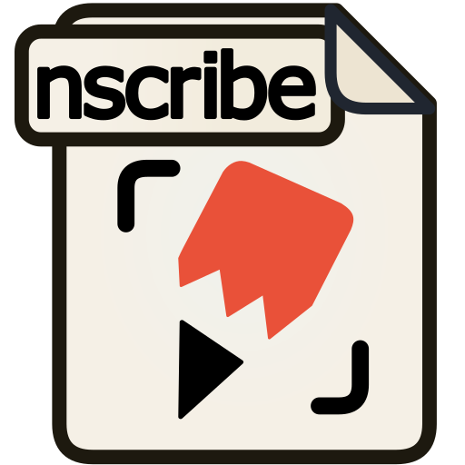
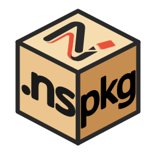
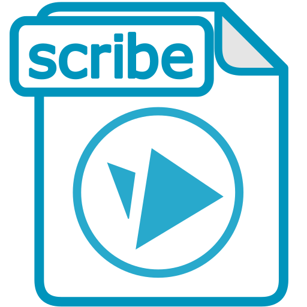

按章节阅读
01
初识 NewScribe
先理解 NewScribe 是什么、它不做什么，以及第一次使用时应该先完成哪几件事。
02 工程与文件本地工程、分享工程和 VideoScribe 导入格式的区别，以及保存、备份和恢复。
03 界面与画布认识工具栏、画布、属性面板和时间轴，并掌握选择、变换、复制和自动平移。
04 素材与 SVG导入图片、GIF、音频和 SVG；理解矢量图、位图以及素材版权。
05 文字与字体文字、竖排、打字机、字体选择、字体版权和 SVG 内部文字。
06 动画与镜头出现动画、消失动画、矢量描绘、位图描绘、复合淡入、时间和镜头。
07 手势与蒙版内置与自定义手势、笔尖可视化取点，以及三种蒙版作用方式。
08 图形与内容元素图形编辑器、图表、表格、二维码、思维导图、公式、分子结构和国际音标。
09 素材库与 AI本地素材库、VideoScribe 素材库、网络素材搜索和 AI 生成 SVG。
10 音频与元数据两条音轨、音量与淡入淡出，以及导出前的视频信息。
11 预览与导出预览检查、导出设置、编码阶段、日志和失败排查。
12 首选项与快捷键默认值、自动保存、启动行为、素材来源、AI 配置和常用快捷键。
13 数据安全与排错备份与恢复、素材丢失、导出卡住、黑屏、字体问题和性能排查。
14 制作流程与术语从脚本到成片的工作流、镜头拆分、导出前检查和常用术语。
文件格式速记

.nscribe
本地工作工程。旁边带一个 .assets 素材文件夹，适合日常编辑和快速保存。

.nspkg
单文件分享工程。图片、SVG、音频和自定义手势都在文件内部。

.scribe
VideoScribe 工程，只能导入。导入结果可能受原工程结构影响。